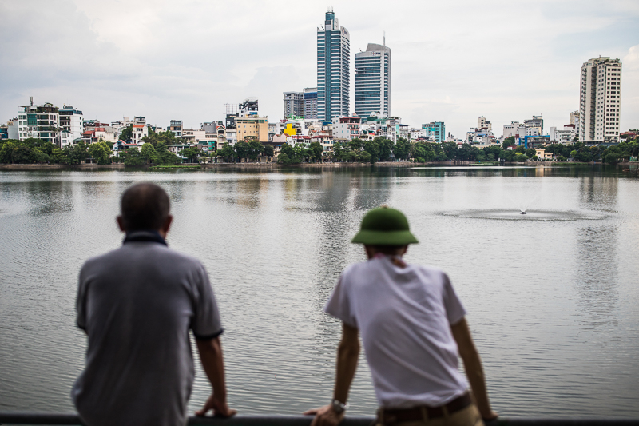
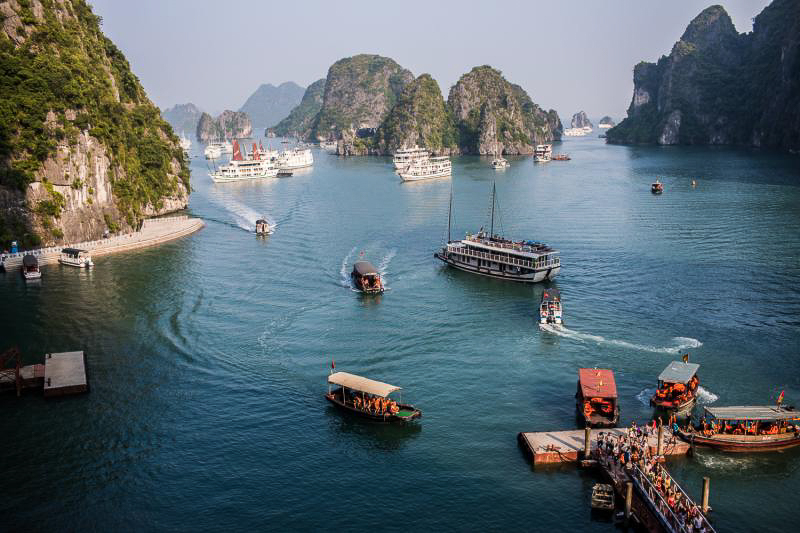
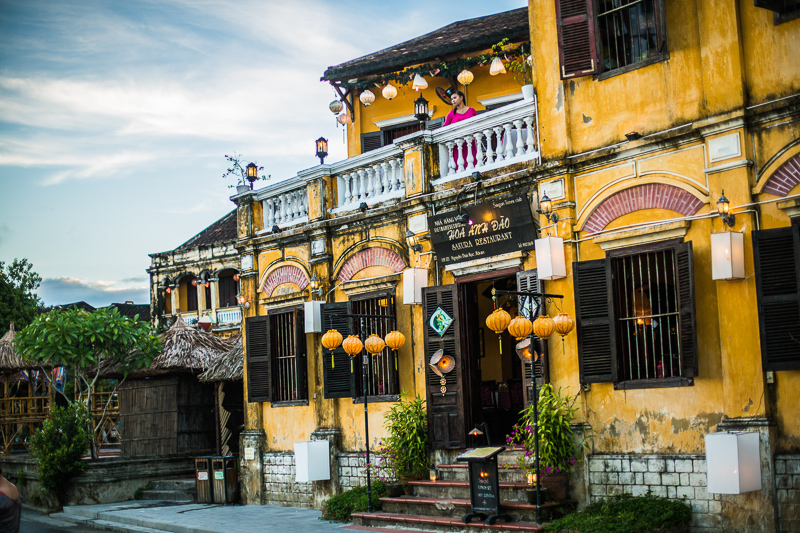
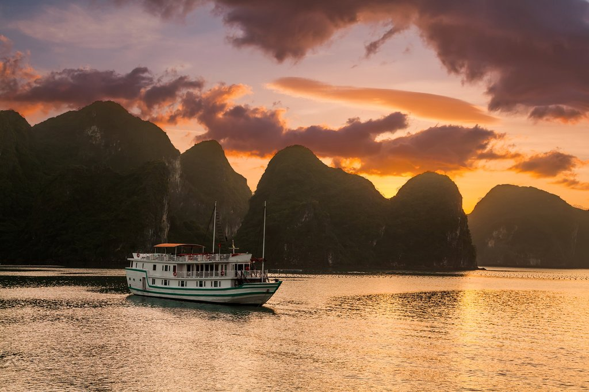
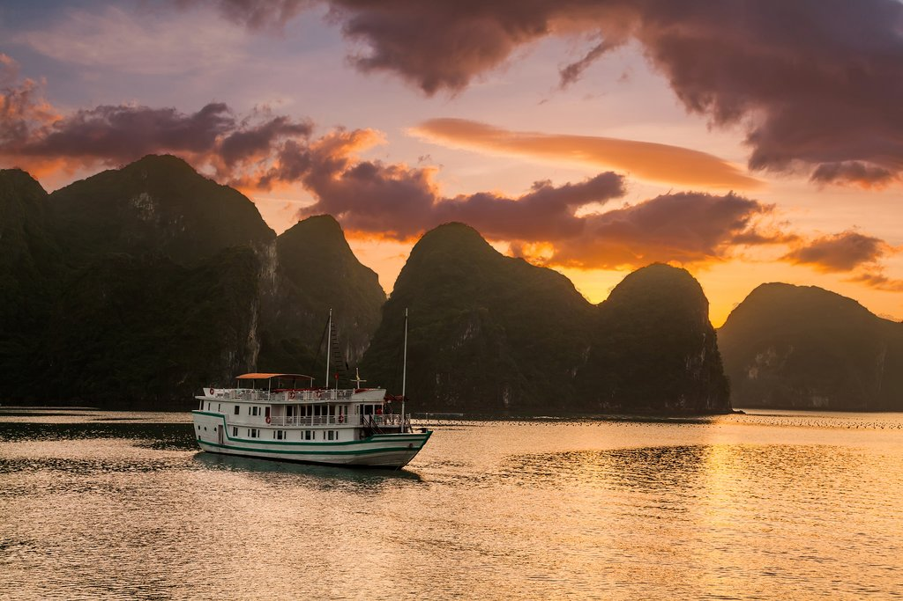

When? 20 Nov 2021
Duration 5 days
Minimum age: 10+
People in group 25-40

Welcome to Hanoi, one of Asia’s most enchanting cities. Overnight in Hanoi
Start the day with a tour of The Presidential Palace (formerly Palace of the Governor-General of French Indochina), Ho Chi Minh’s house-on-stilt and nearby One Pillar Pagoda. Visit the Temple of Literature – the first university of Vietnam built in 11th century. Next is a visit to the Museum of Ethnology, which gives an excellent overview of the country's ethnic groups, their customs and ways of life. Head to the center of Hanoi and explore the lively Old Quarter of Hanoi. In the Old Quarter, learn about the "36 Streets"— a place you must see to experience—and how each street carried the name of the item produced and sold there. Close your day by attending a Water Puppet Show. Overnight in Hanoi
Breakfast at hotel before heading out to Ha Long Bay, a UNESCO World Heritage Site. Overnight in the bay among thousands of limestone islands

Start the day with calming Tai Chi, often accompanied by an amazing sunrise and the quiet breath-taking beauty of the bay’s landscape. The cruise passes beautiful spots such as Trong, Trinh Nu and the Me Cung Caves, and you will have a chance to explore Surprise Cave. Return to Hanoi and transfer to Hoi An via the Danang airport
Morning visit to My Son, one of the most important examples of Hindu influence in Southeast Asia. Although largely in a state of ruin today, My Son is often compared with other historical temple complexes in Southeast Asia, such as Angkor Wat of Cambodia or Ayutthaya of Thailand
 
